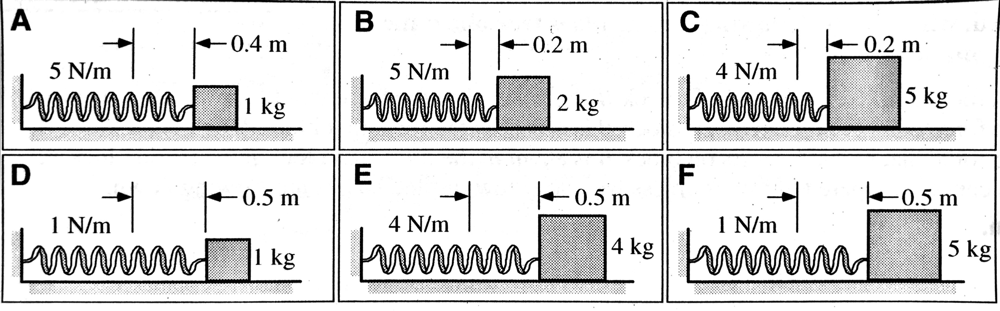

layout: true <div class="my-header"><img src="images/scsdLogo.png" style="height: 70px;"/></div> --- class: center, middle, inverse # AP Physics Daily Plans 2019-2020 ### *"Learning happens when you think hard"* ### *Make that Myelin* ### **Mastery Mindset** ### **\#ImpactLearning** --- class:schodack #2020.02.24 AP Physics - Do Now: Workbook problem 4.G Describes a toy car on a ramp that goes through a loop. Using that problem as a reference derive an equation for the normal force `\(F_N\)` in terms of `\(h\)` , `\(r\)`, `\(m\)` and any physical constants. --- class:schodack #2020.02.24 AP Physics QotD: What would your talent be if you were Miss or Mister World? 1. Go Over Do Now 2. Silent Problem Solving: Porter Packet 7.7 and 7.8 - Activity will be completed in silence! - All communication is to be done in writing on the whiteboard - Leave 1/3 to a half of the right side of your board for questions you have of each other, and the other half for solving the problem. - Save your written conversation (no erasing!) Any changes to your solution should be connected to your written conversation (i.e. a cross out and an arrow drawn to annotate the change) - You will complete 7.7 as a group, leave commnets on another groups board, revisit your board, then we will break the silence and share out answers as a large group. --- class:schodack #2020.02.13 AP Physics - Do Now: The figures below show identical toboggans that have traveled down a snowy hill. The toboggans all have the same speed at the bottom of the hill. Assume that the horizontal surfaces that they travel along are frictionless except for the shaded areas, where the coefficient of friction is given. These shaded areas have different lengths as shown. .center[] **Rank these situations on the basis of the speed of the toboggans as they reach point P. *Explain your reasoning.*** --- class:schodack #2020.02.13 AP Physics .qotd[QotD: What is your favorite Disney movie?] .left-column[] .right-column[1. Do Now 2. Go Over 4.F: Energy Transformations - Discuss as a class 3. Work on 4.G: Circular Motion, Forces, and Energy] HW Over Break: - AP Classroom Energy Questions: MC, Parts A (16 questions) and B (16 questions) --- class:schodack #4.F Energy Transformations ##Part A: -- In Cases A, B, and C above, rank the boxes by the amount of work done by the gravitational force from greatest to least. Justify your ranking. -- In Cases A, B and C above, rank the boxes by the change in kinetic energy from greatest to least. Justify your ranking. -- Case D: You have a ball with identical mass as blocks A, B, and C that rolls down block B's ramp without slipping. How does it's speed compare to blocks A, B, and C? --- class:schodack #4.F ##Parts B + C: --- class:schodack #4.G Circular Motion, Forces, and Energy -- Derive an equation for the normal force in terms of `\(h\)` , `\(r\)`, `\(m\)` --- class:schodack #2020.02.12 AP Physics - Do Now: Experimentally determine the spring constant of your pop-up toy using conservation of energy principles: .center[<img src="https://cdn.shopify.com/s/files/1/1602/8349/products/84724_800x.jpg?v=1528568145" width = "300 px"/>] Put your process on your whiteboard, include an LOL diagram, and any work that you did to solve the problem. --- class:schodack #2020.02.12 AP Physics - Do Now (cont.): Assume you have the ability to easily, and accurately, change the mass of your pop up toy. What could you graph to determine the spring constant? What would your equation look like? .center[<img src="https://cdn.shopify.com/s/files/1/1602/8349/products/84724_800x.jpg?v=1528568145" width = "300 px"/>] --- class:schodack #2020.02.12 AP Physics .qotd[QotD: Which Dr. Seuss character would you be?] 1. Do Now 2. Go over 4.B 3. Work on and whiteboard 4.E in lab groups 4. Work through 4.F in Lab groups HW: - Complete 4.G and upload to classroom (if we don't get to it in class...) --- --- class:schodack #2020.02.11 AP Physics - Do Now: In each case below, an arrow has been shot from the top of a building either up at 45`\(^\circ\)` angle, straight out horizontally, or down at a 45`\(^\circ\)`. All arrows are identical and are shot at the same speed, and the heights of the buildings and direction the arrows are shot are given. Ignore air resistance. .center[<img src="images/arrowRank.jpg" width = "550 px"/>] **Rank these arrows on the basis of their speeds just before they hit the ground below from greatest to least.** --- class:schodack #2020.02.11 AP Physics .qotd[QotD: Do you have a favorite quote/message from a book/movie/song? *And, when you want something, all the universe conspires in helping you to achieve it.*] 1. Do Now 1. Go over 4.A (quick just answers) 1. Complete 4.B in lab groups (if you have not yet) - Once complete compare 4.C answers while waiting -- make any changes based on conversation 2. Whiteboard 4.C. 3. 4.E - Trade papers and critique a peer at your table's response. (If you worked with the people at your table, trade with someone you haven't worked with at a different table) - You are critquing their paper for ***clarity***: do you understand their procedure to the point where you could carry out their procedure? If not mark where + why you are confused. 5. Workbook 4.E in groups and whiteboard --- class:schodack #2020.02.07 AP Physics - Do Now: The figure below shows systems consisting of a block attached to a spring. Each block is resting on a fictionless surface. In each case, a student pulls on the block and stretches the spring to the right by the given distance in the figure. The mass of the block and the spring constant are given for each case. .center[] **Rank these systems on the basis of work done on the block-spring systems by the student.** --- class:schodack #2020.02.07 AP Physics QotD: Has there ever been a time when something so amazing or unexpected happened that it literally left you speechless for a time? 1. Do Now 2. Deriving the Formula for Us + Present on whiteboard 3. Add equations to your packet 4. 4.A + 4.B Homework: AP Workbook 4.C and 4.D - Upload Photos of your work to Google Classroom (Monday 2/10, by 11:59 PM) - Due then so I have a chance to review your answers and plan class accordingly --- class:schodack #2020.02.06 AP Physics .left-column[] .right-column[QotD: If you were featured on the local news, what would you most likely be on there for? 1. Finish Labs 2. Whiteboard Labs 3. Board Meeting on `\(U_g\)` and `\(K\)` Labs 4. Deriving `\(U_s\)` 4. Add equations to your packet 5. AP Workbook 4.A and 4.B] --- class:schodack #2020.02.05 AP Physics QotD: *What music do you put on to decompress from the day?* I like [*Awaken, My Love!* by Childish Gambino](https://open.spotify.com/album/4Carzsnpd6yvuHZ49I0oz8?si=qWx9sf6fTsmB6wrCCJIMZg) 1. LOL Quiz 2. Labs: - `\(U_g\)` - develop a lab based on your understanding of work that would allow you to find a quantitative equation for `\(U_g\)` - Remember that I told you it is related to change in height and mass! - `\(K\)` - develop a lab based on your understanding of work that would allow you to find a quantitative equation for `\(K\)` - Some relationship to mass and velocity! 3. Board Meeting 4. AP Workbook 4.A and 4.B --- #2020.02.05 AP Physics 1. Do Now: - What is work? - How can you measure work? - What are the units for work? --- #2020.02.03 AP Physics QotD: How did you spend the money from your very first job? 1. Do Now: CER Problems in Packet (p. 167-168) 2. Lab - Work and Energy ###HW: - Quiz Wednesday on *qualitative* (no numbers) LOL Diagrams - Workbook 4.A and 4.B --- #2020.01.31 AP Physics QotD: If you could trade places with a celebrity, which celebrity would that be? 1. Finish tic tac problem - Board meeting and discussion 2. Quiz 3. Finish LOL Diagram Practice: - Board meeting and discuss 4. CER with LOL Diagrams --- #Do Now: A satellite is in circular orbit around an unknown planet. The satellite has a speed of 64 km/s, and the radius of its orbit (measured from the center of the planet) is 2,100 km. A second, identical satellite also has a circular orbit around this same planet, of radius 8,400 km. Two students are discussing how the speed of the second satellite might be calculated: Luis says, "*the speed of the second satellite cannot be determined. We need to know the mass of the satellites and the unknown planet.*" Marsha says, "*but the mass of the unknown planet can be calculated with Newton's law of universal gravitation with the speed and radius of the first satellite. We have to do that first, but then we can calculate the speed of the second satellite.*" **Evaluate the arguments of Luis and Marsha. Indicate which statements they make are correct and incorrect.** --- #2020.01.30 AP Physics QotD: You can have an unlimited supply of one thing for the rest of your life, what is it? Sushi? Scotch Tape? 1. Do Now 2. LOL ü§£üòÇ Bar Graphs 3. LOL'n ü§£üòÇ Practice 4. Tic Tac Bounce **Reminders** - Quiz tomorrow on `\(F_g = G \frac{m_1m_2}{r^2}\)` and circular motion --- 2020.01.28 AP Physics QotD: What gives you energy for the day? 1. New Groups 2. [Introduction to energy](https://mrporterphysics.github.io/Presentations/APETM/talks/APETM.html#1) --- #2020.01.27 AP Physics QotD: What is the best thing you have ever bought? 1. Midterms back ***TOMORROW*** so wait until then for questions 2. Finish Flying Farm animals lab 3. AP Question in groups: - Solve Problem on whiteboard (all parts) - Compare as a class - Make your own rubric for the problem + compare to AP scoring 4. Workbook 3.O - solve independently + then compare to your table Next Class: - Go over midterm - New groups (Porter picks) - Start next unit --- #2020.01.17 AP Physics QotD: Whats your favorite TV/streaming series and why is it the best? 1. Quiz 2. Buff Quiz 3. Finish Flying Farm Animals 4. Newton's Universal Law of Gravitation --- #Newtons Universal Law of Gravitation #$$F_g = G\frac{m_1 m_2}{r^2}$$ - `\(F_g\)` Force of gravity between two massive objects - `\(G\)` Universal Gravitation Constant = `\(6.67 \times 10^{-11}\)` Nm`\(^2\)`/kg`\(^2\)` - `\(m_1\)` and `\(m_2\)` mass of each object - `\(r^2\)` distance between the *centers* squared --- #2020.01.15 AP Physics QotD: Who is your favorite Disney hero or heroine? Would you trade places with them? 1. Conical Pendulum 2. Flying Farm Animals Lab 3. Newton's Universal Law of Gravitation HW: - Corrections - AP Classroom - Sign up for no more than 3 Quizzes for a buffet quiz on classroom --- #2020.01.14 AP Physics QotD: What is your funniest family vacation moment? 1. Quiz 2. Finish Einstein Rides the Graviton 3. The Conical Pendulum HW: - Corrections - AP Classroom START THIS ASAP!! --- #20201.01.13 AP Physics QotD: What‚Äôs your favorite sandwich and why? 1. Whiteboard 3.G Mass and Frictional Force 2. 3.H The Rotor Ride 3. Einstein rides the gravitron... HW: - Quiz Tomorrow: - Circular Motion - Atwwod machine (two blocks attached to a string) type problem - Test Corrections: - Monday - 2:30, Tuesday - 2:45, Wednesday 2:45, Thursday - Not available, meeting --- #2020.01.09 AP Physics QotD: What‚Äôs the most delightful hotel or house you‚Äôve stayed in on vacation? 1. Do Now: - *Two bricks are resting on the edge of the lab table. How could you determine which of the two bricks is most massive without lifting either brick? What difference will you observe, and how can this observation lead to the necessary conclusion?* 2. Workbook Problems and class discussions --- ##3.D Vertical Circles What happens to the tension at the top of the circle when the ball has its minimum speed to complete the circular path? -- `\(\Sigma F = \frac{mv^2}{r}\)` Centripetal acceleration can be represented by the velocity squared over the radius -- `\(F_g - F_T = \frac{mv^2}{r}\)` The centripetal force is the sum of the radial forces, gravity and tension -- `\(mg = \frac{mv^2}{r}\)` At the minimum speed the tension approaches zero. -- `\(v = \sqrt{gr}\)` Mass cancels and the equation is solved for velocity --- ##3.D Vertical Circles -- ###Extensions -- Why is the tenion greater at the bottom of the circle than it is at the top of the circle? -- ###Extension If the string was cut at Point `\(Q\)` (which is a height `\(L\)` above the ground) when the ball has a speed `\(v\)`, sketch the path the ball takes before it hits the ground. Derive an expression for the time the ball takes to hit the ground. --- ##3.E Max Speed over the Top Prior to answering the question: Assume the car takes multiple trips over the hill. Each trip the car increases its speed. Describe what happens to the normal force as the speed of the car increases. Why does this happen? -- Hint: pick the direction of acceleration as the positive direction. -- What does it mean to be weightless? --- ##3.E Extension - Whiteboard: *A roller coaster approaches the first loop de loop. Draw a free-body diagram of one of the coaster cars when it is at the top of the first loop. Starting with Newton‚Äôs second law, derive an expression for the minimum speed of the car without it losing contact with the track. When the car was on top of the hill, the same expression was derived for the maximum speed. In a few short sentences, explain how the same expression can represent both the minimum and maximum speed.* --- ##3.F Horizontal Circles An object of mass `\(m\)` moves on a curved path from point `\(X\)` to point `\(Y\)`. Which of the following diagrams indicates a possible combination of the net force `\(F\)`, exerted on the object, the velocity `\(v\)`, and the acceleration `\(a\)` of the object at the location shown. .center[<img src="G:\My Drive\GitHub\mrporterphysics.github.io\Daily Plan\20192020\images\apwb3f.PNG" width = "1000 px"/>] --- ##3.G Mass and Frictional Force ####Background information: - The *period (`\(T\)`)* of rotation is the amount time it takes for one complete rotation. --- #2020.01.08 AP Physics QotD: What are three things that you want to do/accomplish this year? 1. Whiteboard page 63 from workbook material 2. "*Centrifugal*" Force...page 64+65 3. Car turning problem 4. Vertical Circles p. 66-67 5. Max Speed over the top p. 68-69 HW: - Corrections --- A hockey puck is tied to a string that is attached to a stake in the ice. The puck is given a single push perpendicular to the string causing the puck to circle the stake at a constant speed. 1. Draw a picture of the physical situation from the top. 2. Sketch a free-body diagram of the puck. 3. What forces are exerted on the puck as it circles the stake? --- ##2020.01.07 AP Physics QotD: Complete the sentence: *This year I will be bravest when...* 1. Make your own groups of 3 or 4. If we are not productive I will assign group. 2. In your groups review and whiteboard the lab we did before break: - What do the slopes and intercepts (if necessary) represent? - What is the general model for the relationship between tension, velocity, mass and radius? 3. Uniform circular motion 4. AP Workbook 3.A - 3.C Homework: - Any of the AP Workbook above that we did not finish in class - Test corrections due 1/16. A blank test and a list of the problems you got wrong are in your folder. - Multiple Choice: Answer the questions (correctly) that you got wrong and explain why that is the correct answer. Use Claim-Evidence-Reasoning format. - Free Response: Answer the ***entire*** question again. (Except Ben Scott for question 2...only person to get full credit on either of the FRQs.) --- class:photoback background-image: url("https://media.giphy.com/media/13BXaftQtLrkYM/source.gif") #2019.12.20 AP Physics QotD: What is your favorite holiday song? 1. Pivot: Exploring Forces in Circular Motion 2. Top 5: Holiday Movies --- class:photoback background-image: url("https://media.giphy.com/media/13BXaftQtLrkYM/source.gif") #2019.12.18 AP Physics QotD: What are you best at fixing? 1. Whiteboard Workbook homework - Compare solutions as a group 1. FRQ Practice - page 149 in Porter Book - Complete individually - Compare to group - Grade your group with the answer key 2. Test review, options: - Packet Questions - AP Workbook - AP Classroom practice --- #2019.12.16 AP Physics QotD: Would you rather live in the ocean or on the moon? 1. Modified Atwood Machine - Demo and predictions 2. Porter Book - pages: 138 - 140 3. AP Workbook - pages: 47 - 50 4. Porter Book - Old AP FRQ - pages: 149 - 150 HW: - Test Thursday - Review posted online -- use for test review, email me if you have FRQ for me to review --- ##Modified Atwood Machine: - Make measurements to predict the acceleration of your cart (using a scale only!) - Draw an interaction diagram for the situation - Draw free-body diagrams for the cart and hanging mass - Predict if the tension will change from CV to CA for your cart - Whiteboard your predictions and your solution to how to calculate/predict the acceleration --- class:photoback background-image: url("https://media.giphy.com/media/13BXaftQtLrkYM/source.gif") #2019.12.13 AP Physics QotD: If you had to delete all but 3 apps from your smartphone, which ones would you keep? [You can assume that iMessage, Safari, and the phone are installed in addition to your three] 1. Quiz 2. Demo/mini lab 3. Solving Systems --- #2019.12.12 AP Physics QotD: 1. The plan 2. Difference between *mass* and *weight* 2. N2L work time HW: - Quiz tomorrow: N2L Questions, solving quantitatively, 1 object problems --- <iframe width="900" height="500" src="https://www.youtube.com/embed/_Z0X0yE8Ioc" frameborder="0" allow="accelerometer; autoplay; encrypted-media; gyroscope; picture-in-picture" allowfullscreen></iframe> --- #2019.12.10 AP Physics QotD: You have to sing karaoke, what song do you pick? 1. Pivot Results: - Claim: What claim can you make about forces during collisions? - Evidence: From the video and different situations that you tried - Reasoning: How does physics explain why this happens? 2. Demos 3. Friction: - Types - Equation 4. N2L Problem Solving HW: + Check Answers to Workbook pages 30-34 + Complete workbook pages 34-43 --- #2019.12.09 AP Physics QotD: Who would you want to be stuck on an elevator with (anyone past or present)? 1. Elevator Questions 2. Second Law Practice 3. Go over Workbook pages HW: + Pivot: Forces during collisions --- #2019.12.06 AP Physics QotD: What's your idea of a great day? 1. Compare results to lab with group - whiteboard each experiment on different sides of the whiteboards. 2. Board meeting: - How does Force (unbalanaced) affect acceleration? What is the "unbalanaced force" - How does mass affect acceleration for constant net force? 3. Elevator Problems 4. Second Law Practice HW: + Workbook pages: 30-34 --- #2019.12.04 AP Physics QotD: Have you ever completed anything on your "bucket list"? <style type="text/css"> .tg {border-collapse:collapse;border-spacing:0;} .tg td{font-family:Arial, sans-serif;font-size:14px;padding:10px 5px;border-style:solid;border-width:1px;overflow:hidden;word-break:normal;border-color:black;} .tg th{font-family:Arial, sans-serif;font-size:14px;font-weight:normal;padding:10px 5px;border-style:solid;border-width:1px;overflow:hidden;word-break:normal;border-color:black;} .tg .tg-jq7n{font-size:large;font-family:"Courier New", Courier, monospace !important;;border-color:inherit;text-align:left;vertical-align:top} .tg .tg-rdaa{font-weight:bold;font-size:large;font-family:"Courier New", Courier, monospace !important;;border-color:inherit;text-align:left;vertical-align:middle} .tg .tg-1twe{font-weight:bold;font-size:large;font-family:"Courier New", Courier, monospace !important;;border-color:inherit;text-align:left;vertical-align:top} </style> <table class="tg"> <tr> <th class="tg-rdaa">Velociraptors</th> <th class="tg-rdaa">Triceratops</th> <th class="tg-1twe">Stegosaurus</th> <th class="tg-1twe">T-Rex</th> <th class="tg-1twe">Brachiosaurus</th> </tr> <tr> <td class="tg-jq7n">Scott Benjamin<br>Roloson Kylie<br>Sherwood Davin<br>Burns Emily</td> <td class="tg-jq7n">Hirschoff Dominic<br>Fleck Mia<br>Sober Julia</td> <td class="tg-jq7n">Gorman Thomas<br>Champigny Elaina<br>Bennett Meghan</td> <td class="tg-jq7n">Dorn Tyler<br>Ackerman Kevin<br>Albanese Noah</td> <td class="tg-jq7n">Penn Andrew<br>Fletcher Aiden<br>Tedford Alexis</td> </tr> </table> --- #2019.12.04 AP Physics 1. Pivot: Exploring the Cause of Acceleration - Describe the motion of the glider - Jason's Data - Measuring the Acceleration - Analyzing the forces - Designing Experiments: What can we vary? What can we measure? - Collect Data HW: Finish any data collection and analysis from the lab, be ready to have a board meeting Friday on the results. --- class:thanksgiving #2019.11.23 AP Physics QotD: How do you eat leftovers from Thanksgiving? 1. TIPER Questions 2. Friction Lab --- The figures below show systems containing a block initially held at rest on a frictionless surface. In each system, the block is attached to the end of a spring, which is stretched to the right. The mass and spring constant are given for each system, as well as the distance the spring is initially stretched. When the mass is released, the spring will accelerate the block. .center[] **Rank these systems based on the magnitude of the spring force applied on the blocks from greatest to least.** ***Explain your reasoning*** .footer[2019.11.25] --- Boxes are held at rest against rough vertical walls by forces pushing horizontally on the boxes shown. .center[] **Rank the magnitude of the normal force exerted on the walls by these boxes. ** ***Explain your reasoning*** **Rank the magnitude of the force of friction exerted on the boxes by the walls.** ***Explain your reasoning*** .footer[2019.11.25] --- A 0.5 kg ball is suspended from a ceiling by two strings. The ball is at rest. .center[] **Is the tension in string 1 *greater than*, *less than*, or *the same as* the tension in string 2?** **Explain** .footer[2019.11.25] --- An elephant (2000 kg) and hippo (1500 kg) are playing tug-of-war. The hippo pulls the elephant with a 600 N force and both remain motionless. .center[<img src="https://d279m997dpfwgl.cloudfront.net/wp/2018/09/tugofwar-1000x500.png" width= "700 px"/>] - Draw a free-body diagram for the elephant and the hippo. .footer[2019.11.25] --- An elephant (2000 kg) and hippo (1500 kg) are playing tug-of-war. Now the hippo pulls with 700 N and the elephant begins to slide. .center[<img src="https://d279m997dpfwgl.cloudfront.net/wp/2018/09/tugofwar-1000x500.png" width= "500 px"/>] Which of the following is true? A. `\(F_{\textrm{hippo on rope}} > F_{\textrm{elephant on rope}} \)` B. `\(F_{\textrm{hippo on rope}} < F_{\textrm{elephant on rope}} \)` C. `\(F_{\textrm{hippo on rope}} = F_{\textrm{elephant on rope}} \)` .footer[2019.11.25] --- An elephant (2000 kg) and hippo (1500 kg) are playing tug-of-war. Now the hippo pulls with 700 N and the elephant begins to slide. .center[<img src="https://d279m997dpfwgl.cloudfront.net/wp/2018/09/tugofwar-1000x500.png" width= "700 px"/>] - Change your force diagram for the hippo. Its stays still in the same place. How does that work? - Change your force diagram for the elephant. It starts to slide. Why does that happen? .footer[2019.11.25] --- <img src="https://noschese180.files.wordpress.com/2014/11/2015-cp-02-bfpm1.png?w=479&h=359" width = "900 px"/> .footer[2019.11.25, image from Frank Noschese] --- class: thanksgiving #2019.11.22 AP Physics QotD: Do you host or travel for Thanksgiving? 1. Whiteboard Force Lab 2. Quiz 3. Friction Lab --- class:thanksgiving #2019.11.21 AP Physics QotD: What Thanksgiving traditions do you have? **Station 1:** Find the mass of the cart system, find the spring constant. (You will need to hook your computer up to the cart to measure the spring force). **Station 2:** Find the unknown tension. **Station 3:** Find the unknown tension. **Station 4:** Find the unknown mass. **Station 5:** Find all of the forces. **Station 6:** Determine the scale reading. --- class:thanksgiving #2019.11.19 AP Physics QotD: What is your favorite Thanksgiving dessert? 1. Quiz 2. More force problem-solving in rotating partners Coming up: - Thursday - find the force lab - Friday - Quiz: quantitative problem solving with forces --- class:thanksgiving #2019.11.18 AP Physics QotD: What is the best Thanksgiving side dish? 1. Do Now: #3 page 117 (fishing üé£) problem 2. Force Problem-Solving in rotating partners --- class:thanksgiving #2019.11.13 AP Physics QotD: What was a time when you were totally out of your element/comfort zone? 1. `\(\vec{F}_g\)` Lab - Using one of your spring as a force sensor (`\(k\)`= 15 N/m), develop and carry out an experiment that will allow you to find the relationship between mass and the force of gravity on that mass near the surface of the earth - Remember: `\(\mid F_s \mid = k \mid x\mid \)` - Also, in physics we make ***ALL*** calculations with meters, kilograms, and seconds 2. Solving Balanced Force Problems with FBDs and VADs Next Class: - Quiz on qualitative force diagrams: FBDs, VADs, and interaction diagrams --- class: photoback background-image: url("https://media.giphy.com/media/1j7QdavE6rqGA/giphy.gif") #2019.11.12 AP Physics 1. Do Now: - Draw a Interaction Diagram, FBD, and VAD for the wall climber as they scale the wall (assume constant velocity as they climb) 2. `\(\vec{F}_s\)` Lab - How is stretch related to force for your springs? - Notes: you are looking at how much the spring is *stretched* not the length of the spring! 2. `\(\vec{F}_g\)` Lab - Using one of your spring as a force sensor `(\k\)` = 15 N/m, develop and carry out an experiment that will allow you to find the relationship between mass and the force of gravity on that mass near the surface of the earth 3. Solving Force Problems --- class:thanksgiving #2019.11.08 AP Physics QotD: What is the best board game? 1. Buffet Quiz 2. Go Over FBDs 3. What's a VAD (Force Vector Addition Diagrams)? 4. `\(\vec{F}_s\)` Lab - How is stretch related to force for your springs? - Notes: you are looking at how much the spring is *stretched* not the length of the spring! 4. `\(\vec{F}_g\)` Lab - Using one of your springs, develop and carry out an experiment that will allow you to find the relationship between mass and the force of gravity on that mass near the surface of the earth --- class:thanksgiving #2019.11.06 AP Physics QotD: Where's the most surreal area you been to? 1. Finish naming forces 2. Interaction Diagrams and Free Body Diagrams 3. Practice with FBDs and Interaction Diagrams 4. Spring Force Lab: - How is stretch related to force for your springs? - Notes: you are looking at how much the spring is *stretched* not the length of the spring! 5. Force of Gravity Lab - Using one of your springs, develop and carry out an experiment that will allow you to find the relationship between mass and the force of gravity on that mass near the surface of the earth --- class:thanksgiving #2019.11.05 AP Physics QotD: When is it appropriate to start playing holiday music? 1. Summarize Last Class 2. Interaction Types 3. Interaction Stations 4. Naming the interactions 5. New diagrams 6. Practice with new diagrams --- class:thanksgiving #2019.11.04 AP Physics New Lab Groups! <style type="text/css"> .tg {border-collapse:collapse;border-spacing:0;} .tg td{font-family:Arial, sans-serif;font-size:14px;padding:10px 5px;border-style:solid;border-width:1px;overflow:hidden;word-break:normal;border-color:black;} .tg th{font-family:Arial, sans-serif;font-size:14px;font-weight:normal;padding:10px 5px;border-style:solid;border-width:1px;overflow:hidden;word-break:normal;border-color:black;} .tg .tg-3fn9{font-size:30px;border-color:inherit;text-align:left;vertical-align:middle} .tg .tg-gyqk{font-weight:bold;font-size:30px;border-color:inherit;text-align:left;vertical-align:middle} </style> <table class="tg"> <tr> <th class="tg-gyqk">Tension</th> <th class="tg-gyqk">Normal</th> <th class="tg-gyqk">Gravitational</th> <th class="tg-gyqk">Electrostatic</th> <th class="tg-gyqk">Spring</th> </tr> <tr> <td class="tg-3fn9">Fletcher<br>Scott<br>Fleck<br>Burns</td> <td class="tg-3fn9">Hirschoff<br>Dorn<br>Ackerman</td> <td class="tg-3fn9">Sober<br>Champigny<br>Bennett</td> <td class="tg-3fn9">Penn<br>Sherwood<br>Roloson</td> <td class="tg-3fn9">Gorman<br>Tedford<br>Albanese</td> </tr> </table> --- class:thanksgiving #2019.11.04 AP Physics 1. New Lab Groups 2. Analyzing Reasons for motion with images [(Presentation)](https://mrporterphysics.github.io/Presentations/Forces/talks/APForces.html#2) 3. Bowling Ball Physics 4. Dueling Fan Carts --- class:halloween #2019.10.31 AP Phyiscs ###Do Now on whiteboard in lab groups: A football is kicked on level ground at an angle of 45 degrees from the horizontal. The football travels 45 meters horizontally. At what velocity was the football kicked? --- class:halloween #2019.10.31 AP Phyiscs ###QotD: What is your favorite Halloween Candy? ###Bonus QotD: What is your favorite scary movie? 1. Do Now 2. Test Corrections --- class:halloween #Test Corrections: 1. For each problem you got wrong: What type of mistake was it? - Conceptual, Calculation, Clueless, or Careless? 2. For each problem you got wrong: What did you learn from this mistake? - I.e. the concept, to be careful with signs, to read the directions etc 3. For each problem you got wrong: Fix the mistake - solve the problem correctly. SHOW ALL WORK 4. For FRQ number two - solve it with d1 = 100 m, and d2 = 50 meters. Then rewrite your response. 5. A summary paragraph of what you learned and how you can improve for future tests and assessments. ***Tests must remain in my classroom. They are secure exams.*** ***This also means you CANNOT take pictures of your solutions and share them with your peers!*** --- class: halloween #2019.10.30 AP Physics QotD: What was ***your*** favorite Halloween costume? ###Lesson: Introduction to Linearization 1. Collect position vs. time data for a the puck on a ramp. Collect at least 8 data points 2. Playing Hide and Go Fit 3. What is linearization? How do you linearize? 4. Using the calculator in Pivot 5. Reviewing Chemistry and linearizing 6. Modeling the Period of a Pendulum --- #2019.10.25 AP Physics QotD: How did you get that scar of yours? 1. [5 Minutes] Do Now: A projectile is launched on level ground: - What angle(s) give you the greatest range? Determine and explain why - What angle(s) give you the greatest hang time? Why? - What angles give the same range for the same initial velocity? Why? 1. [30 Minutes] Projectile Motion Problems 2. [5 Minutes] Fact Sheet 3. [35 Minutes] Practice Test 4. [5 Minutes] Friday's Last 5 **Top 5**: - *Top 5 Classic Halloween Costumes* --- #2019.10.24 AP Physics QotD: Do you have any weird/unique routines or superstitions? (For example: I ***have*** to put on my left sock before my right sock, and the same for shoes, left on first.) 1. Horizontal Projectile Lab: - Determine the "launch" velocity of your ball using only a meterstick - Predict the horizontal range of the ball if it is launched from the top of the whiteboard cabinents (about 2.15 meters tall...you should probably remeasure that) 2. Horizontal Projectile Ranking Task 3. Projectiles at an angle --- #2019.10.23 QotD: What was something courageous you‚Äôve (in person) seen someone do? 1. Do Now 2. Introduction to Horizontal Projectile Motion 3. Initial Problem Solving 4. Ranking Task 5. More Problem Solving Practice --- #2019.10.21 AP Physics QotD: Who is the most competitive person you know? 1. Quiz 2. Check Freefall Answers 2. 2D Velocity Pivot 3. Intro to projectile motion and horizontally fired projectiles --- #2019.10.17 AP Physics QotD: What household chore do you actually enjoy? 1. Do Now: Check answers to 3.6 (keys should be on your table, labeled 4.6, but it should have the same questions ) 1. Freefall pivot - each group will measure the acceleration of a falling ball 2. What is freefall? What is a projectile? 3. Freefall problem solving **Quiz Monday** on: - **CAPM 1** I can express the motion of an object with constant acceleration using narrative, mathematical, and graphical representations. - **CAPM 2** I can create mathematical models and analyze graphical relationships for acceleration, velocity, and position of the center of mass of a system and use them to calculate properties of the motion of the center of mass of a system. - **CAPM 3** I can make predictions about a system based on the fact that acceleration is equal to the change in velocity per unit time, and velocity is equal to the change in position per unit time. --- #New Groups: <style type="text/css"> .tg {border-collapse:collapse;border-spacing:0;border-color:#93a1a1;} .tg td{font-family:Arial, sans-serif;font-size:14px;padding:10px 5px;border-style:solid;border-width:1px;overflow:hidden;word-break:normal;border-color:#93a1a1;color:#002b36;background-color:#fdf6e3;} .tg th{font-family:Arial, sans-serif;font-size:14px;font-weight:normal;padding:10px 5px;border-style:solid;border-width:1px;overflow:hidden;word-break:normal;border-color:#93a1a1;color:#fdf6e3;background-color:#657b83;} .tg .tg-bp7d{font-weight:bold;font-size:32px;text-align:left;vertical-align:top} .tg .tg-84g4{font-size:28px;text-align:left;vertical-align:top} .tg .tg-omhm{background-color:#eee8d5;font-size:28px;text-align:left;vertical-align:top} </style> <table class="tg"> <tr> <th class="tg-bp7d">Knights</th> <th class="tg-bp7d">Spartans</th> <th class="tg-bp7d">Ninjas</th> <th class="tg-bp7d">Vikings</th> <th class="tg-bp7d">Samurai</th> </tr> <tr> <td class="tg-84g4">Meghan<br>Ben<br>Mia<br></td> <td class="tg-omhm">Emily<br>Elaina<br>Kylie<br>Dom</td> <td class="tg-84g4">Noah<br>Kevin<br>Andrew</td> <td class="tg-omhm">Alexis<br>Julia<br>Davin</td> <td class="tg-84g4">Tyler<br>Tommy<br>Aiden</td> </tr> </table> --- #2019.10.15 AP Physics QotD: What is your silliest fear? 1. Do Now: Reread ranking question, remember what you and your group were doing. 2. Finish Ranking Question on Whiteboards 3. Deriving the Kinematic Equations: - `\(v_f = v_0 + at\)` - `\(\Delta x = v_0t+\frac{1}{2}at^2\)` - `\({v_f}^2={v_0}^2+2a\Delta x\)` 4. Freefall HW and Notes (Two Week Training Plan): - AP Progress Checks are 'unlocked' for you to begin. You can find them on [apclassroom.collegeboard.org](apclassroom.collegeboard.org) - Use this for prep on your first test on October 25th. - Revisit 3.6 -- solve problems if you have not - Finish 4.1 - freefall problems --- #2019.10.11 AP Physics QotD: What was your dream job when you were younger? Is that still your dream job? 1. Gallery Walk - 3.5 - Rotate from board to board and compare solutions - Write down any questions you have - Time for questions 2. Ranking Task - Ball on Ramp - Solve on Whiteboard in groups ***BEFORE*** putting in your packet 3. Deriving the Kinematic Equations 4. Go Over 3.6 --- #2019.10.10 AP Physics QotD: What is your favorite current/former spirit day theme? 1. Quiz 2. Whiteboard Homework in groups -- gallery walk - Go over **all** solutions as a group - Each group will whiteboard two problems - You will get time to look at each solution and compare it to your own group's solution - Time for questions 3. Deriving the kinematic equations 4. Using the kinematic equations - Identify which to use for problems - Working with new problems and solving --- #2019.10.08 AP Physics QotD: What is your most used emoji? üòë‚Äç 1. Do Now 2. Finish and go over whiteboard problem from last class 3. 3.5 Problem-Solving with VT graphs HW: - Quiz on Thursday: - **CVPM 2**: I can interpret and make calculations from position vs. time graphs for objects with constant velocity. - **CAPM 1**: I can express the motion of an object with constant acceleration using narrative, mathematical, and graphical representations. - **CAPM 2**: I can create mathematical models and analyze graphical relationships for acceleration, velocity, and position of the center of mass of a system and use them to calculate propeties of the motion of the center of mass of a system. --- #2019.10.06 AP Physics QotD: How do you feel about clownsü§°ü§°? 1. Do Now 2. Review 3.4 3. Problem-Solving with velocity vs. time graphs (3.5) --- #2019.10.04 AP Physics QotD: What is the last goal you achieved? 1. Quiz 2. Working with VT Graphs and Constant Acceleration (3.4 with lab groups) 3. Problem-Solving using Graphs (3.5) --- ##2019.10.02 AP Physics üéÉ Do Now : The graph below is for an object in one-dimensional motion. The vertical axis is not labeled. .center[] **If the vertical axis is <u>*position*</u>, does the object ever change direction? If so, at what times or times does this change in direction occur?** **If the vertical axis is <u>*velocity*</u>, does the object ever change direction? If so, at what times or times does this change in direction occur?** --- #2019.10.02 AP Physics üéÉ QotD: What topic could you give a 20-minute presentation on without any preparation? 1. Do Now 2. Carts and Ramps Summary - each group will be assigned one situation to present to the class. On your board: - The situation (image and description) - The three graphs (x vs. t, v vs. t, and a vs. t) - Motion Map 3. Ball and Ramps with groups 4. Analyzing VT Graphs with objects with acceleration --- The graphs below show the velocity of two objects during the same time interval. .center[] Three students are discussing the <u>displacements</u> of the objects for the interval. **Apriel**: *"I think the Object 2 will have the greater displacement because it gets to a higher speed faster than Object 1."* **Brody**: *"Object 1 spends most of its time speeding up, but object 2 spends most of its time slowing down. Object 1 will go further."* **Cyril**: *"The displacement is found from the area of the velocity graphs. But in this case we don't know the initial position that we need to add to the area. We don't have enough information to find the displacement."* **Which, if any, of these students do you agree with?** .footer[2019.10.02] --- ###2019.10.01 üéÉ AP Physics - Do Now: .left-column[ <img src="../20192020/images/Byronariel.jpg" width = "400 px"/> ] .right-column[ 1. Do either children ever change direction? If so, at what time does this happen? Explain your reasoning. 2. Are the two children ever at the same position at the same time? If so, at what time does this happen? Explain your reasoning. 3. Do the two children ever have the same speed? If so, at what time does this happen? Explain your reasoning. 4. Do the two children ever have the same acceleration? If so, at what time does this happen? Explain your reasoning. ] --- #2019.10.01 üéÉ AP Physics QotD: If you had a boat, what would you name it? 1. Board Meeting Summary 2. Carts and Ramps Lab Extension: - Organize Cards based on how you *think* they will match - Add you predictions to your packet - Test and create the motion with your cart and ramp 2. Pivot - Making an argument: - Discuss within your group, make an argument, put it on your whiteboard. (Think Claim-Evidence-Reasoning) --- #2019.09.30 AP Physics QotD: Who is your celebrity crush? 1. "Grocery Store Test" 2. Board Meeting 2. Pivot - Making an argument: - Discuss within your group, make an argument, put it on your whiteboard. (Think Claim-Evidence-Reasoning) 3. Carts and Ramps Lab Extension HW: - will be posted tonight, some workbook work will be required #AP CHECKS DUE <u>FRIDAY</u> --- #2019.09.26 AP Physics QotD: What do you rebel against? 1. Finish Collecting Data 2. Answer Questions in Pivot 3. Whiteboard Results 4. Board Meeting 5. Carts and Ramps HW: - Revise Discussion and Conclusions in Pivots - Pivot Activity - Check answers to AP Workbook --- #2019.09.25 AP Physics QotD: Do you prefer pens or pencils? Why? 1. Quiz 2. Go Over Applying the Model -- Whiteboard in lab groups 3. Lab: Does your object change its velocity constantly? --- .footer[2019.09.25] ##New Lab Groups <style type="text/css"> .tg {border-collapse:collapse;border-spacing:0;} .tg td{font-family:Arial, sans-serif;font-size:14px;padding:10px 5px;border-style:solid;border-width:1px;overflow:hidden;word-break:normal;border-color:black;} .tg th{font-family:Arial, sans-serif;font-size:14px;font-weight:normal;padding:10px 5px;border-style:solid;border-width:1px;overflow:hidden;word-break:normal;border-color:black;} .tg .tg-kerg{font-weight:bold;font-size:28px;background-color:#c0c0c0;color:#333333;border-color:inherit;text-align:left;vertical-align:top} .tg .tg-mehj{font-weight:bold;font-size:28px;background-color:#c0c0c0;color:#333333;text-align:left;vertical-align:top} .tg .tg-a8eg{font-size:28px;text-align:left;vertical-align:top} </style> <table class="tg"> <tr> <th class="tg-mehj">Pull Back Truck<br>(Moving Right)</th> <th class="tg-mehj">Pull Back Car<br>(Moving Left)</th> <th class="tg-mehj">Fan Cart w/ Push<br>(Push To the Left)</th> <th class="tg-mehj"><span style="font-weight:700">Fan Cart w/ Push</span><br><span style="font-weight:700">(Push To the Right)</span></th> <th class="tg-mehj">Dropped Ball</th> </tr> <tr> <td class="tg-a8eg">Tyler<br>Ben<br>Julia<br>Emily</td> <td class="tg-a8eg">Mia<br>Meghan<br>Kevin</td> <td class="tg-a8eg">Elaina<br>Andrew<br>Noah</td> <td class="tg-a8eg">Kylie<br>Alexis<br>Tommy</td> <td class="tg-a8eg">Aiden<br>Davin<br>Dom</td> </tr> </table> --- .footer[2019.09.25] ##Observations ####What observations do you have about the motion of the different toys? ####How does the motion of each toy differ from the motion of the toy buggies? --- .footer[2019.09.25] ##Essential Question: ####Using the built in video analysis tools within Pivot Interactives determine if your toy situation has a --- #2019.09.24 AP Physics QotD: Vacation on the beach or adventure in the mountains? 1. Do Now: Finish 2.7 in lab tables (or review what you have) --> check area question with me as a group 2. Go Over Quiz 2. Applying the Model Up Next: - Quiz tomorrow like our first one, but add in calculating average velocity and average speed - Next class: new lab groups --- ###Quiz: IPS 1. and CVPM 1. IPS 1. I can justify and apply mathematical routines to solve problems CVPM 1. I can express the motion of an object with constant velocity using narrative, mathematical, and graphical representations. --- ####Question 1: .center[<img src="../20192020/images/quiz1mm1.png" width = "600 px"/>] **Narrative**: Car is at position x = 2 meters for 2 seconds before it moves at a constant speed in the positive direction of 8/3 m/s for 3 seconds. At time 5 seconds the car stops for a second and then moves in the negative direction at a constant speed of 10 m/s. Immediately at 7 seconds the car travels at a new speed of 1 m/s in the negative direction. --- #2019.09.20 AP Physics QotD: Lead by Ms Sweet - what is Schodack/Castleton all about? What is your favorite thing to do in the area? 1. 2.6: Interpreting Position vs. Time Graphs 2. Average vs. Instantaneous and Velocity vs. Speed 3. 2.7 Velocity vs. Time Graphs HW: - Don't forget the Pivot of bowling balls and the AP Workbook practice --- #2019.09.19 AP Physics QotD: Where‚Äôs your favorite place to nap? 1. Walk the graph lab/activity 2. Quiz 3. Working deeper with position vs. time graphs 4. Average vs. instantaneous velocity --- ##2019.09.18 AP Physics 1. Do Now: Create a position time graph of Mr. Porter's adventures in the hallway this morning. Assume the hallway is 1 dimensional, `\(t=0\)` seconds is when Mr. Porter leaves his classroom door, `\(x = 0\)` is Mr. Porter's classroom door, and towards the office is the negative direction. - *Mr. Porter leaves his classroom and **hurries** to the bathroom. After leaving the bathroom he **casually** walks towards the copier on the first floor (just past Mr. Smith's room on the left hand side). Before he gets to the copier, he stops to listen to a few Baconisms, and continues on his way. Mr. Porter makes his copies and then **rushes** back to his classroom to beat the bell.* QotD: What food do you love that a lot of people might find a little odd? --- #2019.09.18 AP Physics 1. Do Now ✅ 2. QotD ✅ 3. Motion Maps and multiple representations 4. Walk the graph lab - download graphical anaylsis from vernier in the chrome store (link on classroom) Tomorrow: Quiz - multiple representations of motion (similar to the practice and walk the graph lab activity.) --- ##2019.09.16 AP Physics QotD: What animal would you want for a non-traditional pet? (i.e. not a dog, fish or cat) 1. Do Now - on half sheet of paper - What is a model? - What does it mean for something to move with a *constant velocity*? - What is velocity? 2. Dorothy and Toto 3. CER and is it constant velocity? What is a particle model? 4. Motion Maps and Multiple Representations HW: .checklist[ + Visit MHHS AP Physics Training Site, start your practice ] --- class:center, middle #Exit Ticket: Write down an example of motion that results in a difference between displacement and distance. Add a drawing if it helps support your example. --- ##2019.09.13 AP Physics ###Friday the 13th... QotD: What skill or talent do you most want to learn? 1. Welcome to Miss Sweet! She is a teacher candidate from Siena College, will be observing in the fall and teaching with me in the spring 1. Do Now - Take 5 minutes to discuss with your group: - What do the slope and intercept of your graph represent? - Did you write your equation for math class or for physics class? - How does your graph model the motion of your buggy? - Develop an argument for the following question: "Does your buggy move in a *consistent manner*?" Be sure to support your argument with evidence from your experiment. 2. CVPM - What is it? 3. Does it move with CV? 4. Motion Maps --- ##2019.09.12 AP Physics 1. Do Now: - Hand in safety and AP contracts - QotD: What slang are you really happy went out of fashion? 2. Buggy Lab: - Gather materials - Get buggy (don't forget to record which buggy you have) - Help place down 50 meter measuring tape - Collect Data 3. Make whiteboard 4. Board meeting: - Do the buggies move *in a consistent manner*? - What conclusions can we draw about modeling the motion of these buggies? 5. Defining location and change in location 6. Multiple Representations HW: Discussion and Conclusion in Pivot --- ##2019.09.10 AP Physics 1. Do Now: - Pick up safety contract and AP contract - Write down on a piece of paper: What are two important things to consider when designing and experiment? - Think about the QotD: What is a weird fun fact about yourself? 2. Introductory Science Skills and Linear Modeling 3. Write conclusion for Pasta Bridge Lab 4. Buggy Lab HW: - Signed AP Contract - Signed Safety Contract --- ##2019.09.09 AP Physics 1. Question of the day: sweet or savory for breakfast? 2. Collect Data for Pasta Bridge lab 3. Answer "Pre Board Meeting Questions" 4. Whiteboard Lab Results 5. Board Meeting 6. What is linear modeling? 7. Answer Conclusion Questions --- ##2019.09.06 AP Physics 1. Grab a handout, find a seat anywhere, and answer the 3 questions on the handout. 2. Fill out the back of your index card with: - Your name - a phone number or numbers where you can be reached if you happen to over sleep for the midterm or final - in your opinion the best candy ever 3. Lab Grouping activity 4. Survival Plans üèùÔ∏è 5. Technology Administrata: - Sign up for Google Classroom - Sign up for Pivot Interactives (online lab notebook) - Sign Up for AP Classroom 6. Pasta Bridge Lab üçù 7. Exit ticket üéüÔ∏è: Class reflection on classroom .footer[<img src="http://www.schodack.k12.ny.us/wp-content/uploads/2018/08/SchodackCSD-header-notag.jpg" width=100/>] --- ##2019.09.06 AP Physics ###Lab Grouping Activity - Arrange yourselves into logical groups based on the word on your card - There should be 4 groups of 3 and 1 groups of 4 --- class:middle, center, inverse #Google Classroom Code: #4rhs1w --- class:middle, center, inverse #Sign Up For AP Classroom: #Go to: [https://myap.collegeboard.org](https://myap.collegeboard.org) #Code: EM6VVW --- class:middle,center, inverse #Sign up for Pivot Interactives #Go to: [pivotinteractives.com](9100ba46) #Join Class with code: 1bf9b6e4 --- .footer[<img src="http://www.schodack.k12.ny.us/wp-content/uploads/2018/08/SchodackCSD-header-notag.jpg" width=100/>] ##2019.09.06 AP Physics ###Pasta Bridge Lab The goal for this lab is to design an experiment to discover the relationship between strands of pasta and the number of pebbles that it can hold. Design an experiment that will allow you to find your relationship. -- Please Note - Make sure someone is prepared to catch the cup - Make a marking on your cup so you can reuse it if needed - Throw out pasta in trash after they break --- ##2019.09.06 AP Physics ###End of Class To Do: - Save Pivot - Clean up area, mark the cup you are using (so you use the same cup next time) - is there anything else you need to measure to start taking data again tomorrow? (i.e. chair distance, chair orientation, etc) - Erase whiteboard and return whiteboard markers - Answer question on Google Classroom - Hand in survival paper (questionnaire) in bin on laptop cart .footer[<img src="http://www.schodack.k12.ny.us/wp-content/uploads/2018/08/SchodackCSD-header-notag.jpg" width=100/>] ---